From download to your first repository
Cairn runs locally and has no account to create. It uses the git already on your machine, so your SSH keys, credential helpers and ~/.ssh/config work as they do in your terminal.
- Download Cairn for macOS (signed and notarized DMG) or Windows from Releases. On Windows, if SmartScreen warns you, click More info → Run anyway.
- On first launch you land on the Welcome tab: Open Repository, Clone and Initialize sit at the top, with your Setup Progress, Git Identity and recent repositories below.
- Open Open Full Setup Wizard (or run Setup Wizard… from the command palette). It checks Git, the agent CLIs (Claude Code, Codex, Gemini, opencode, aider),
gh/glaband your editor, and says how to install anything missing. - Open a repository with ⌘O, or use the Repository menu in the toolbar: Open Repository…, Clone Repository…, Initialize Repository…, Manage Remotes…, Publish Repository…, Refresh and a list of recent repositories.
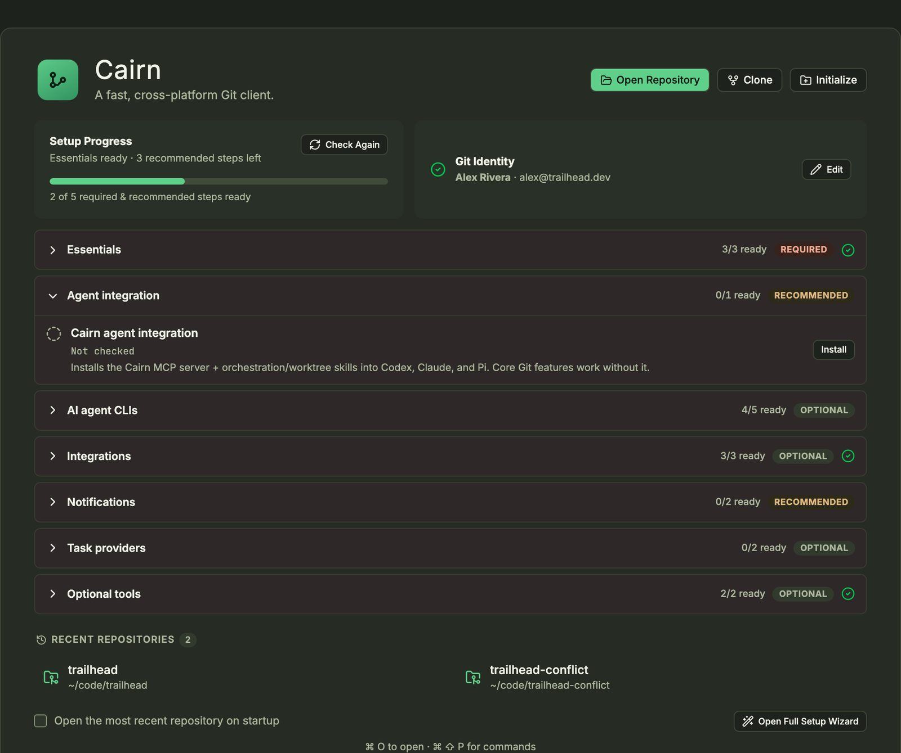
Cloning names the subfolder from the URL, and you can edit it. For a private HTTPS repository with no cached credentials, Cairn asks for a username and token and retries.
One window for the whole repository
The navigator is on the left, History and Preview are in the centre, and Working Changes are on the right. The toolbar holds Fetch, Pull, Push, Branch, Stash, the Tools menu, Run build and a Commands box (⌘⇧P).

- Rearrange panes by dragging a tab into another group or to an edge. Drag a divider to resize; sizes are saved.
- Switch workspaces with ⌘⇧1 (Standard), ⌘⇧2 (Log) and ⌘⇧3 (Working Tree).
- Save a layout with Layout: Save Current Layout… in the command palette. Layout: Reset Workbench returns to the default, and the Layout: Show … commands reopen a closed pane.
- Work on several repositories from the tabs along the top; + opens another. Each repository keeps its own panes and terminals.
- Everything else lives in two menus, shown below.
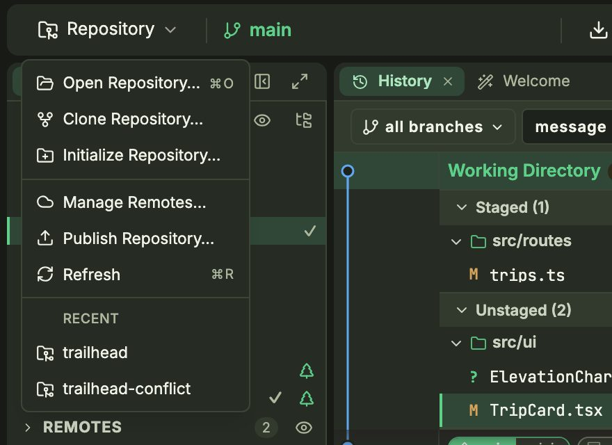
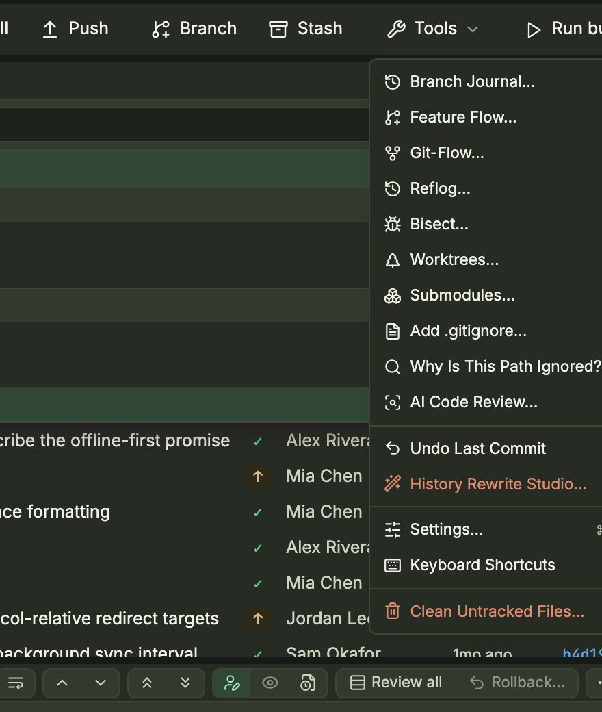
Read the whole repository at a glance
The graph colours each lane and marks HEAD, branches, remotes, tags and stashes on their commits. Uncommitted work is a Working Directory row at the top that expands into your staged and unstaged files. Each commit shows whether it is pushed (✓) or still local (↑).
- Click a commit to see its changed files right under it, and its diff in the Preview pane. Move through the graph with ↑ and ↓.
- Use the bar above the graph to pick a branch scope (all branches), choose a field (message, author, path) and type in filter…. ⌘F jumps there. The ↑ button keeps only commits that haven't been pushed.
- Right-click a commit for its actions:
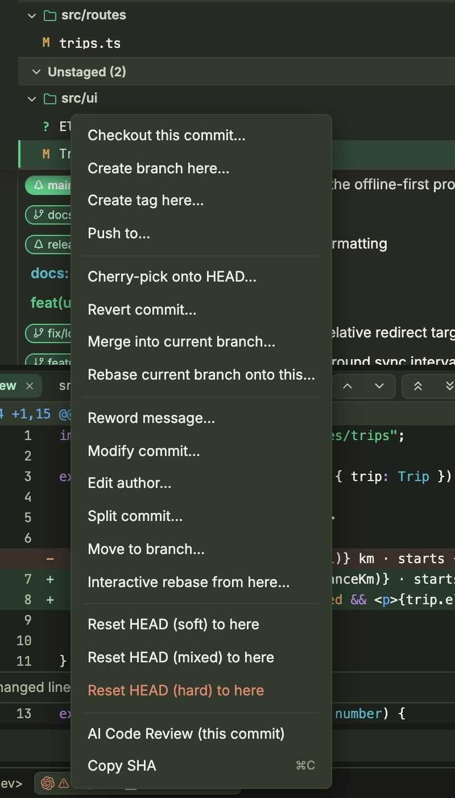
Find lost work
Tools → Reflog… lists every position HEAD has been at, so you can recover a commit after a reset or a deleted branch. Tools → Bisect… walks you through marking commits good or bad until Git finds the one that introduced a bug. Tools → Branch Journal… shows how a branch has moved.
Diffs that stay fast on large files
Click any changed file to open its diff in the Preview pane. The buttons above the diff switch between unified, side-by-side and whole-file views, toggle line wrapping, and step between changes and files.

- Inline blame shows the author, age and commit message of the line under your cursor (Diff: Toggle Inline Blame in the palette).
- Review all shows every changed file in one scroll, like a pull request. Rollback… reverts the file you're looking at.
- Stage by hunk or line. Hover a hunk in a working-tree diff to stage just that part.
- Images open in an image diff with 2-up, Swipe and Onion skin modes, plus zoom and pan.
Commit exactly what you mean
Working Changes lists staged and unstaged files as a tree, and shows the same lists under the Working Directory row in History. The commit box sits under them.
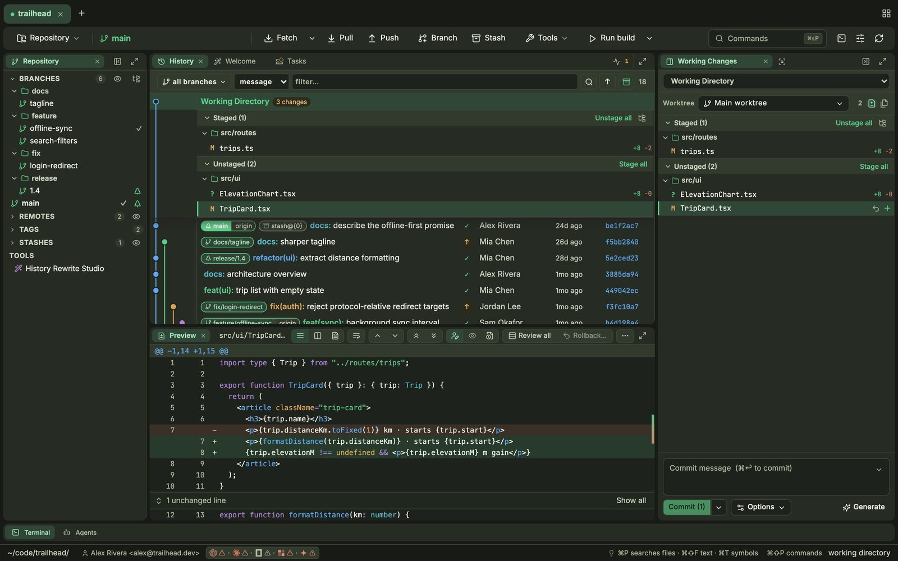
- Click a file to see its diff. Use Stage all / Unstage all, the + on a row, or ⌘/⇧-click to select several files and act on them together.
- Type a message and press ⌘↩, or click Commit (n). Generate asks your agent to draft a message from the staged changes.
- Open the arrow beside Commit or Options for the other ways to commit. Amend Last Commit… is in the command palette, and Tools → Undo Last Commit puts the changes back in your working tree.
- The Worktree picker switches which checkout you are committing in.
- To drop a change, use the row's undo button or its context menu. Tools → Add .gitignore… adds ignore rules, Why Is This Path Ignored?… explains one, and Clean Untracked Files… removes what Git isn't tracking.
Branch without leaving your flow
The Repository pane lists branches as a tree, with ahead/behind counts and a ✓ on the current one. Remotes, Tags and Stashes are folded sections below it.
- Press ⌘B or click Branch to create a branch.
- Right-click a branch for everything else: Checkout, Merge into current, Rebase current onto this…, Create tag here…, Rename… (F2), Set upstream…, Push, Delete Branch… and the reset options.
- Checkout shows a plan first. If your local changes conflict, Cairn saves them to a stash and offers Resolve conflicts or Keep stashed, so no work is lost.
- Drag a branch or tag onto a commit to move it there. Cairn asks you to confirm, and the context menu offers the same action.
- For a repository on GitHub or GitLab, the branch menu can open a pull or merge request form on the provider's site with the branch already filled in.
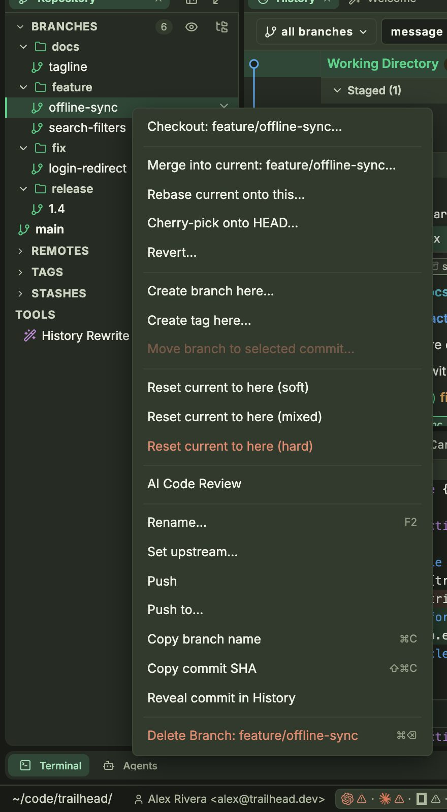
Sync in one click, with recovery built in
Simple operations, such as a fast-forward pull on a clean tree, run inline with a progress bar. Riskier ones show a plan you confirm, and Cairn offers a recovery path if anything fails.
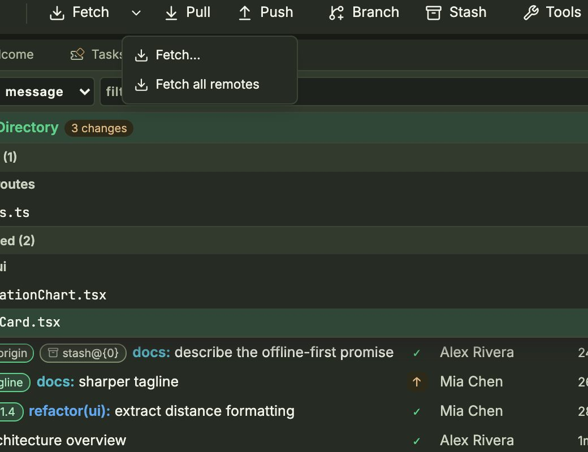
- Fetch… opens options: which remotes, prune, tags. Defaults are saved per repository.
- Pull by merge, rebase or fast-forward only. A branch with no upstream asks for a remote and branch first (Set upstream and pull).
- Smart Pull… and Sync Current Branch… are in the command palette. Smart Pull stashes local changes, pulls and restores them; Sync pulls and then pushes.
- Push normally, with force-with-lease, or with force. Push to… on a commit pushes up to that commit.
- Remotes can be added, renamed and edited (including a separate push URL) from Manage Remotes… or the Remotes section.
Clean up commits before anyone sees them
Right-click a commit and choose Interactive rebase from here…. Every commit from there to HEAD is listed, oldest first.
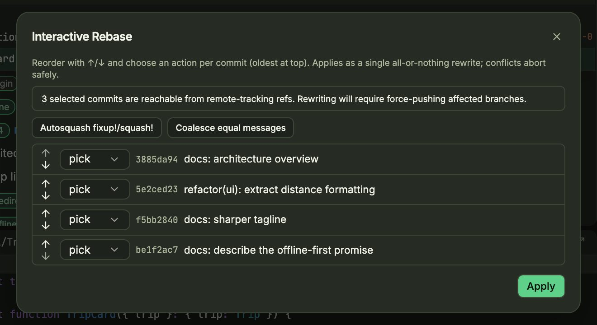
- Set an action for each commit with its dropdown (pick, reword, squash, fixup, drop), and reorder with the ↑ ↓ arrows.
- Autosquash fixup!/squash! arranges marked commits for you, and Coalesce equal messages merges commits with identical messages.
- Click Apply. The rewrite is all-or-nothing: if anything conflicts, Cairn cancels and leaves your branch where it was.
For a single commit, the same menu has Reword message…, Modify commit…, Edit author…, Split commit… (by files, including older commits) and Move to branch…. Rewriting pushed commits means a force push, and Cairn tells you so.
Rewrite the whole repository
History Rewrite Studio… (Tools menu, or the entry in the navigator) handles repository-wide jobs: remove secrets or large files, extract or move paths, rename paths, rewrite author emails or commit messages, and merge another repository in. Each run goes through a safety checklist that asks you to commit or stash first, create a backup branch, and acknowledge that teammates must re-clone.
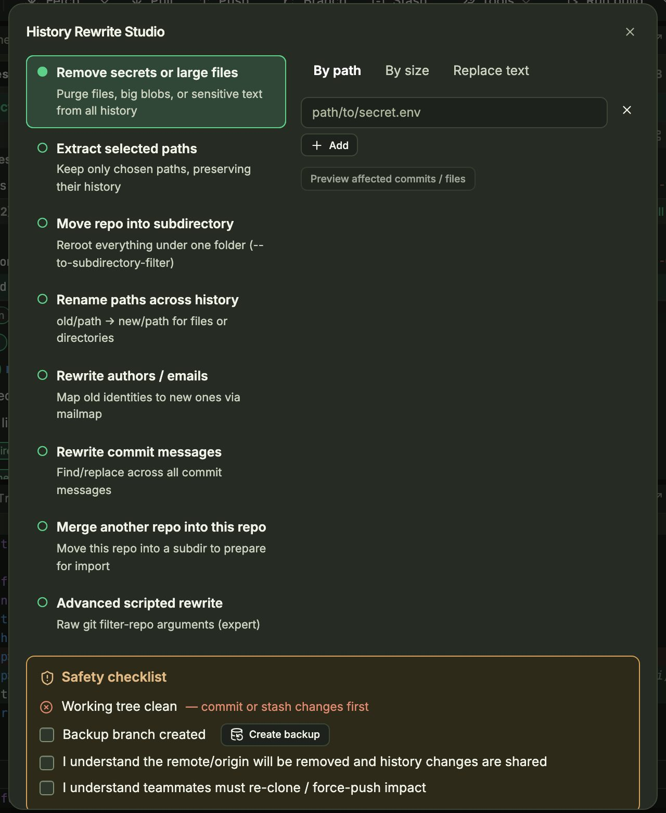
A three-way solver that does the easy part for you
When a merge, rebase, cherry-pick or pull hits a conflict, a red Conflict Solver (n) button appears in the toolbar. Click it to open the solver: ours on the left, the result in the middle, theirs on the right.
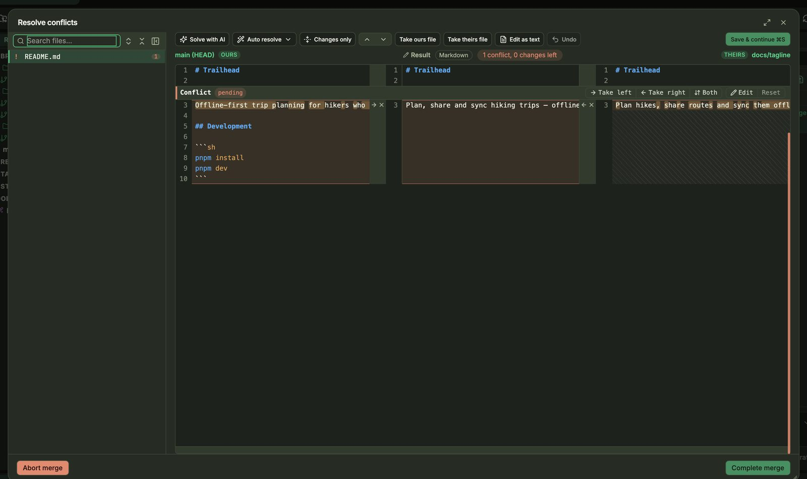
- Pick a file in the list on the left. Changes that don't conflict are applied for you; Auto resolve merges blocks where the two sides touched different lines, and Solve with AI asks your agent.
- For each conflict, click Take left, Take right or Both, or Edit the block by hand. Reset undoes that choice.
- To settle a whole file at once, use Take ours file or Take theirs file. Edit as text opens the full result, and Undo steps back.
- Click Save & continue (⌘S). Cairn stages the file and moves to the next. When all are resolved, Complete merge commits it. Abort merge backs out.
Park work in seconds
- Click Stash in the toolbar. Cairn shows exactly what will be stored and what will be cleaned from the working tree.
- Add a message, choose what happens after (Clean stored changes and so on) and whether to Include untracked files, then click Create reviewed stash.
- Stashes appear under Stashes in the navigator and as badges in the graph on the commit they were based on. Right-click one to apply, pop, rename or drop it, or to compare it with the selected commit.
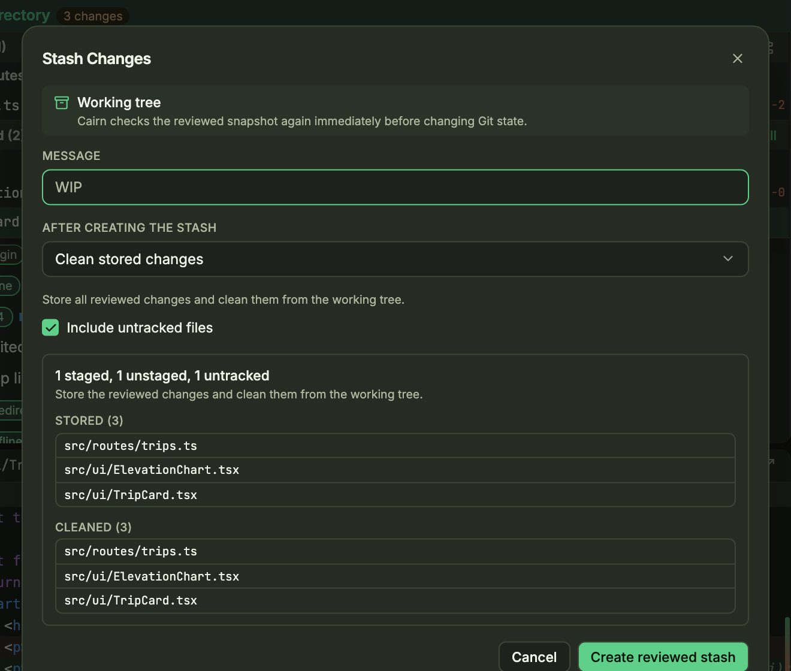
Several branches checked out at once
- Open Tools → Worktrees…. Git worktrees lists the main checkout and each linked worktree, with its branch and whether it's clean or dirty. Add, convert, repair or prune entries from the buttons below.
- Select several worktrees or managed workspaces to remove or clean them up together. Clean up safe only removes ones with nothing to lose.
- The Worktree picker at the top of Working Changes switches which checkout you're committing in.
- Tools → Submodules… shows submodule status and lets you init, update, sync or add one. A new submodule is staged, not committed.
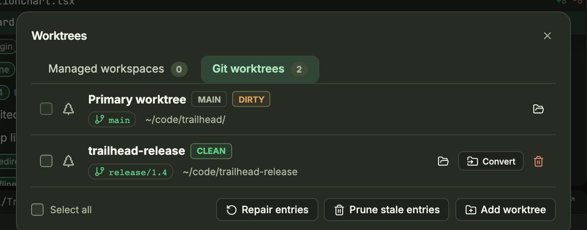
When an agent runs in a managed workspace, Cairn gives it its own worktree. Where the filesystem supports copy-on-write it seeds the worktree that way, so the agent's edits don't touch your checkout.
Get a review before you open the PR
Cairn reviews your working changes, a branch or a single commit with the agent CLI you already use. The review runs on your machine. The only network traffic is between that CLI and your AI provider.
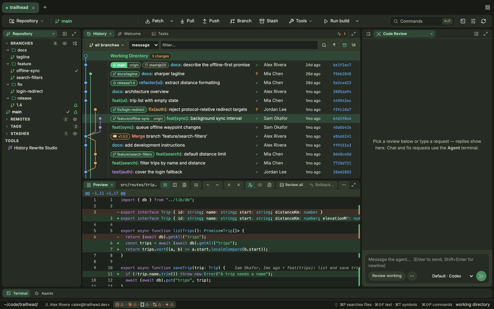
- Open Tools → AI Code Review… to open the pane, or right-click a branch or commit and choose AI Code Review to review exactly that.
- Choose the agent in the picker at the bottom right (for example Default · Codex), then click Review working. The ⋯ button lists the other targets, such as staged changes.
- Or type a request in the box instead. Findings appear in the pane; open one to jump to the line, or send it to the agent to fix. Chat and fix requests continue in the Agent terminal.
- In Settings → Code Review, set the default review agent and add Additional review instructions for this repository, for example "Focus on security and migrations."
Talk to your agent beside your code
Agent Chat connects to Claude Code, Codex and other agents over ACP. Each chat belongs to a repository and is kept between sessions. The bottom panel's Agents tab lists past threads across your projects, with a search box, a location filter and New session.
- Start a chat from New session, then choose the agent and model before you send.
- Type
/to list the agent's commands, or$to insert a skill from your project's or home.agents,.codexor.claudefolder. - Attach files by pasting an image or dropping files on the composer. Click an attached image to mark it up before you send.
- Press Esc to stop a turn. Drafts are kept, and you can keep typing while the agent works.
- Retry or edit any of your messages from the transcript. Tool activity is grouped into collapsible steps.
Agents run in tabs that tell you when they need you
Open the panel with the Terminal tab at the bottom, or toggle it with ⌃`. A background process keeps each session running, so terminals survive closing or reloading the window.

- Get notified. When an agent finishes a turn or rings the bell, its tab lights up and you get a desktop notification. ⌘⇧U jumps to the agent that needs you.
- Hand it context. Drag a file onto the terminal, or paste a screenshot, to give its path to Claude or another agent.
- Organize tabs. Drag to reorder. Drag a tab into the terminal body to split it beside another. Right-click to change a tab's colour. Terminal: Toggle Session Tabs Side/Top switches the tab layout.
- Start anywhere. The + menu opens a shell in any recent project without switching repositories.
- Run configs. Run build in the toolbar runs your
launch.json,tasks.jsonorpackage.jsonscripts; the arrow beside it picks which.
Find anything, then hand it to an agent
⌘P opens search. The Files, Text and Symbols buttons (or Tab) switch modes, and a preview opens at the match. The footer offers Open in Cairn, Edit in editor and Add to agent.
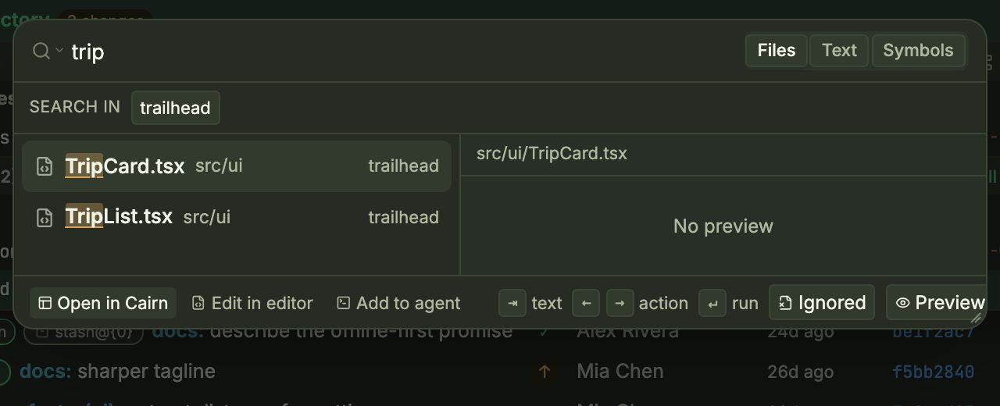
- ⌘⇧F searches file contents (powered by ripgrep) and ⌘T searches symbols. Toggle case (⌥C), whole word (⌥W) and regex (⌥R). Ignored includes
.gitignored files, and you can add other open repositories to the search. - ⌘⇧P opens the command palette, which lists every action in Cairn. In search, type
>to switch to commands or#for symbols. - ⌘⇧L opens Prompt Snippets, a library of reusable agent prompts. Fuzzy search tolerates typos, and ↩ inserts the snippet into the active agent. Snippets can include fields such as
{{name:Label|default}}and built-ins such as{{branch}},{{repo}}and{{clipboard}}. - Select text in a terminal and press ⌘⇧S to save it as a snippet. Move your library between machines with the CSV export and import.
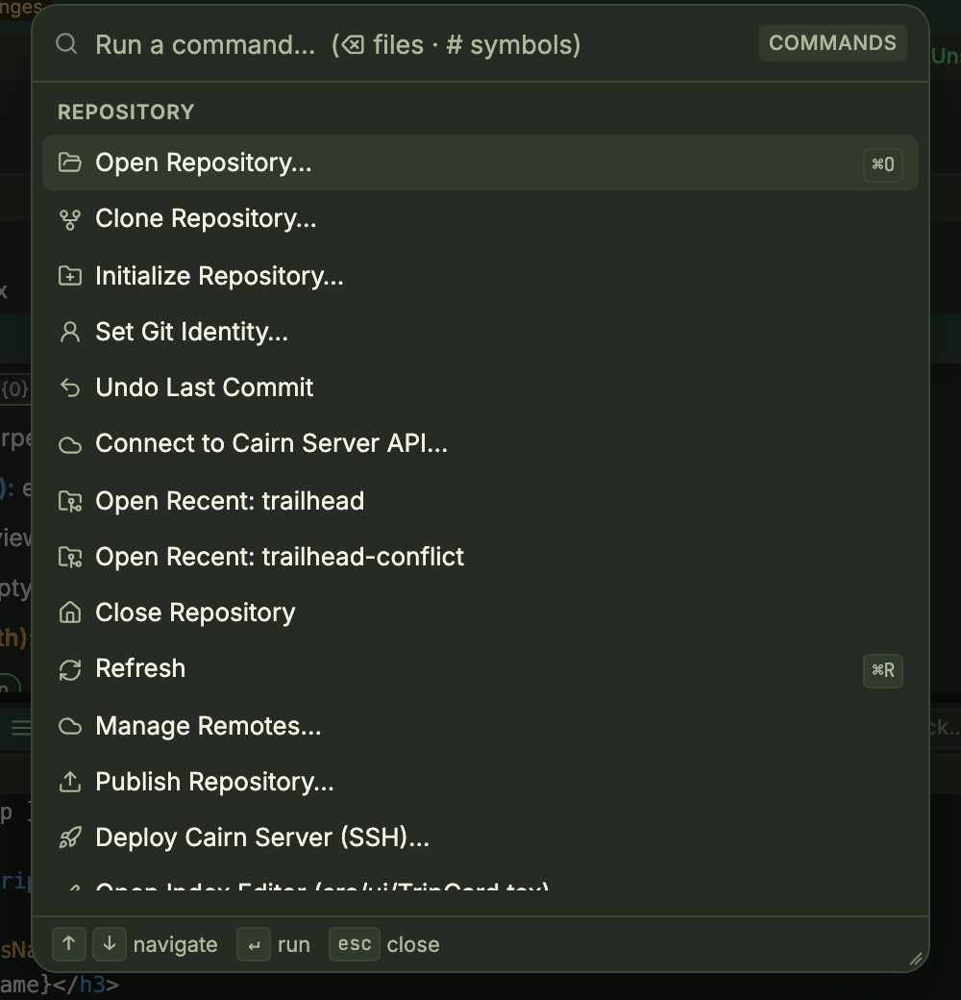
Your issues and checks, next to the code
The Tasks tab brings GitHub issues and Jira tickets into one sortable list, with Start beside each to begin work on it. CI checks for the current branch come from GitHub Actions.
- Connect sources in Settings → Tasks. You can add several Jira sites; tokens are stored in your OS keychain. For GitHub, run
gh auth loginonce. - In the Tasks tab, filter by provider (All, GitHub, Jira), Assigned, Reported, All Open or Done, and by tags, sprint or milestone.
- For CI, use Layout: Show CI to see checks and runs. Commits in the history also show their CI status. Cairn stores no GitHub token of its own.
Keep an eye on agents when you're away
- Mobile Companion. Pair your phone in Settings → Mobile Companion. You get agent notifications, approvals and diffs on your phone.
- Telegram. In Settings → Telegram, pair a bot to receive agent updates, answer an agent's questions and continue a chat from Telegram.
- Cairn in a browser. Deploy Cairn Server (SSH)… in the command palette installs the web version on any Docker host you can reach over SSH. It has the same Git tools and terminals.
Cairn without leaving the terminal
The standalone terminal UI runs on macOS, Linux and Windows. You can detach from a session and reattach later; the session keeps running in between.
- Install with the one-line installer on the home page. Run the same command again to update.
- Run
cairnin any Git repository. Five numbered panes show the workspace, work surface, commit composer, history and commit detail. - Move between panes with ctrl+w then 1–5, and within a pane with j/k. Press ? to see every key. : opens the command palette.
- Press Ctrl+] to detach. Run
cairnagain to reconnect.

Make it yours
Open settings with ⌘, or Tools → Settings…. Sections: General, Git Workflows, Tasks, Code Review, Mobile Companion, Telegram and About.

- Theme: Olive, Moss, Warm, Dark, Cream or Classic. Accent: Emerald, Indigo, Amber or Cobalt.
- Density and row style control how compact lists are. List view shows files as a tree or a flat list. Language: English or Vietnamese.
- Code and Terminal set font sizes, scrollback, and how much scrollback is restored when you reconnect.
- Repository refresh and Notifications control background scans and what Cairn surfaces when terminals and agents finish.
- Git Workflows sets defaults for pull, fetch and sync.
The keys worth learning first
Press ? (or Tools → Keyboard Shortcuts) for the full list. On Windows, use Ctrl instead of ⌘.
| ⌘⇧P | Command palette |
| ⌘P · ⌘⇧F · ⌘T | Search files · text · symbols |
| ⌘⇧L | Prompt snippets |
| ⌘⇧1 · ⌘⇧2 · ⌘⇧3 | Standard · Log · Working Tree workspace |
| ⌘O · ⌘R · ⌘B | Open repository · Refresh · New branch |
| ⌘↩ | Commit (in the message box) |
| ⌘F | Filter history |
| ↑ / ↓ | Move through the graph |
| ⌃` | Toggle terminal |
| ⌘⇧U | Jump to the agent that needs attention |
| ⌘K (in terminal) | Clear the terminal |
| ⌘⇧S (in terminal) | Save selection as a snippet |
| ⌘, | Settings |
| Esc | Close palette, dialog or menu |
Ready to try it?
Free, with no account. Uses your own agents. Notarized on macOS.
⤓ Download Cairn — free Back to the overview